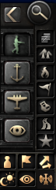
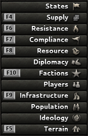
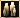
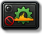

快捷键
原页面：Hotkeys
快捷键（又称键盘快捷方式）让你无需使用鼠标即可快速调用特定的游戏功能。游戏没有常规的改键方式，只能通过修改游戏文件或使用第三方程序来实现。
国旗及其右侧紧邻的 9 个图标按钮（启用 La Résistance 后为 10 个）可直接打开与国家互动的主要菜单。这些菜单按钮的快捷键见下文，它们按键盘最上一排从左到右依次排列。

| 快捷键 | Q | Shift+Q | Shift+W | W | E | R | T | Y | U | I | Shift+E |
|---|---|---|---|---|---|---|---|---|---|---|---|
| 打开 | 政府 | 决议 | 情报机构 | 科研 | 国际市场 | 贸易 | 建造 | 生产 | 招募与部署 | 后勤 | 军官团 |
地图快捷键
| 按键 | 操作 | 描述 |
|---|---|---|
| Ctrl + 数字键 | 把省份或战略区域分配给一个数字键 | 左键点击省份或战略区域将其选中。然后按住 Ctrl ^Ctrl 键，按下数字键 1、2、3、4、5、6、7、8、9、0。此操作会把所按的数字键指定为快速选择该省份或战略区域的快捷键。提示：连按两次数字快捷键可将地图居中到你指定的省份或战略区域。 |
| Home | 放大 | 按下🏠 主页键。 |
| End | 缩小 | 按下End键。 |
| Ctrl + F9 | 切换 GUI | 按下^CtrlF9组合键可隐藏 GUI 元素，只显示地图本身。等同于控制台指令 debug_nogui。 |
| Ctrl + F10 | 保存地图 | 按下^CtrlF10组合键可将政治省份地图保存到截图文件夹中。 |
| Ctrl + Shift + F10 | 切换锁定镜头 | 按下^Ctrl⇧ShiftF10组合键可禁用缩放和平移，再次按下同一组合键即可恢复。 |
| F11 | 截图 | 按下F11键可将截图保存到截图文件夹中。 |
| Pause/Break、空格 | 暂停/继续 | 按下空格键键、Pause键或Break键可暂停或取消暂停游戏。在多人游戏中，按下Pause键或Break键同样有效。 |
| Backspace | 跳转到首都 | 按下Backspace键可将地图焦点移到当前国家的首都。 |
| 方向键 | 平移镜头 | 按方向键指示的方向移动镜头。此操作也可以用鼠标完成：把光标移到屏幕边缘，或按住鼠标中键拖动。 |
| AltGr + Shift + 点击 | 进攻标记 | 为多人游戏中的盟友添加进攻标记。 |
| AltGr + 点击 | 防守标记 | 为多人游戏中的盟友添加防守标记。 |
| Ctrl + Alt + 点击 | 防守标记 | 为多人游戏中的盟友添加防守标记。 |
地图模式界面快捷键
地图右下角的按钮。每种地图模式都会突出显示地图上的某一类信息，并通常会为此改变提示框内容。

地图模式界面
| 按键 | 地图模式或开关 | 描述 |
|---|---|---|
| Ctrl + F1 | 所有可用地图模式 |  所有可能的地图模式窗口。 |
| F | 搜索（查找） | 点击「搜索」按钮或按下F，即可打开用于查找国家、州和城市的菜单。输入名称中至少 2 个连续字母就会列出名称列表。继续输入更多连续字母可缩小列表范围。列表中，国家前方会显示国旗，州没有符号，城市则用彩色圆圈（≥ 20 胜利点）或彩色方块（< 20 胜利点）表示。圆圈或方块的颜色表示归属/控制情况，具体如下： 红色 = 敌方， 灰色 = 中立/友好， 绿色 = 我方拥有/控制。点击名称可将地图居中到所选国家、州或城市。点击「返回本土」按钮可将地图居中到你的首都。 |
| F1 | 默认值 | 点击默认值按钮或按下F1，即可看到政治地图模式与地形地图模式混合的效果，更便于看清国界以及每个省份的地形类型和控制者。陆战时适合选择该模式，因为它有助于跟踪战争进展、制定和执行作战计划以及向部队下达命令。 |
| F2 | 战略海军 | 点击战略海军地图模式按钮或按下F2，即可看到突出显示大型海域的地图模式，并根据你的制海权状况着色：优势（绿色）、均势（黄色）或劣势（红色）。它还会让海军基地更加醒目，并在你把鼠标悬停在有舰船巡逻的海域时，通过提示框显示更详细的信息。这是三种显示运输船队航线的模式之一（另外两种是补给地图模式和资源地图模式）。最后，它会在所有有海军单位执行任务的海域添加小型的「任务」图标。该地图模式会用黄色斜条纹标出「回避」海域，用红色斜条纹标出「封锁」海域。 |
| F3 | 战略空军 | 点击战略空军地图模式按钮或按下F3，即可看到突出显示大型空域的地图模式，并根据你的制空权状况着色：优势（绿色）、均势（黄色）或劣势（红色）。它还会让空军基地更加醒目，并在你把鼠标悬停在空域上时，通过提示框显示更详细的信息。最后，它还会在每个有航空队执行任务的空域显示「任务」图标。 |
| 「无」 | 特工 | 点击「特工」地图模式按钮，即可看到突出显示特工、其任务、进行中的行动以及情报网络覆盖范围的地图模式。详见情报机构。 |
| F4 | 点击补给地图模式按钮或按下F4，即可看到显示当前补给状况的地图模式。省份会根据你在此处补给质量的好坏着色。该地图模式还会显示你的首都补给中心，以及它通过铁路和运输船队与陆上补给中心和港口补给中心之间的所有连接。把光标悬停在省份、铁路、海上航线、补给中心和单位上时，提示框会提供更多信息，揭示补给来源、补给消耗和补给瓶颈。这是第二种显示运输船队航线的地图模式（另外两种是战略海军地图模式和资源地图模式）。 | |
| F5 | 地形 | 点击地形地图模式按钮或按下F5，即可看到用简化颜色显示地形类型的地图模式。把鼠标光标悬停在每个省份上，提示框会显示各种地形对单位的影响。 |
| F6 | 抵抗度 | 点击抵抗度地图模式按钮或按下F6，可查看一种地图模式，它会按当前的抵抗度给所有州着色，并改变提示框以提供更详细的抵抗度信息。 |
| F7 | 顺从度 | 点击顺从度地图模式按钮或按下F7，可查看一种地图模式，它会按当前的顺从度给所有州着色，并改变提示框以提供更详细的顺从度信息。 |
| F8 | 资源 | 点击资源地图模式按钮或按下F8，即可看到按州显示世界所有可用资源（包括合成工厂生产的资源，甚至包括其他国家的资源）的位置和数量的地图模式。这是第三种显示运输船队航线的地图模式（另外两种是战略海军地图模式和补给地图模式）。 |
| F9 | 基础设施 | 点击基础设施地图模式按钮或按下F9，即可看到显示每个州基础设施水平的地图模式。 |
| F10 | 阵营 | 点击阵营地图模式按钮或按下F10，即可看到显示阵营名称、并按各国当前所属阵营着色的地图模式。 |
| 「无」 | 州 | 点击州地图模式按钮，即可按各州的初始类别着色，该类别会限制建造槽位的初始数量。初始颜色不会改变，但建造槽位数量可以通过科技或国策增加。 |
| 「无」 | 外交 | 点击外交地图模式按钮，即可根据世界各国对当前所选国家的看法为其着色（右键点击国家可选择新的国家；请确保当前没有选中任何单位）。每个国家的提示框会改为显示其对当前所选国家的看法。 绿色 = 当前所选国家控制的领土。 蓝色 = 与当前所选国家同属一个阵营。 灰色 = 对当前所选国家持「中立」看法的国家。 橙色 = 对当前所选国家看法极差的国家。 红色 = 与当前所选国家交战的国家。 |
| 「无」 | 玩家 | 点击「玩家」地图模式按钮，即可显示哪个国家由哪位玩家控制。 |
| 「无」 |  人口 |
点击人口地图模式按钮，即可显示每个州的人口数量。 |
| 「无」 | 意识形态 | 点击意识形态地图模式按钮，即可按国家的意识形态着色。 蓝色 = 民主主义。 棕色 = 法西斯主义。 红色 = 共产主义。 灰色 = 中立主义。 |
| M | 单位标记 | 点击「单位标记」按钮或按下M，即可在地图上切换显示所有单位标记或仅显示玩家的单位标记。 |
| , | 标记颜色 | 点击「单位颜色」按钮或按下,，即可在盟军标记使用国家颜色或友方/中立/敌方颜色之间切换。 |
| . | 盟友作战计划 | 点击「盟友作战计划」按钮或按下.，即可开启或关闭盟友作战计划的显示。 |
| N | 昼夜 | 点击「昼夜」按钮或按下N，即可开启或关闭昼夜地图叠加层。 |
| 「无」 | 战争迷雾 | 点击「战争迷雾」按钮，即可开启或关闭遮挡地形的云层。 |
| 「无」 | 雷达 | 点击「雷达」按钮，即可开启或关闭雷达范围可见线。 |
陆军快捷键
| 按键 | 操作 | 描述 |
|---|---|---|
| O | 师总览 | O 键O可打开陆军的师总览，也可通过屏幕右上角的按钮打开。 |
| Ctrl + 数字键 | 把集团军或师分配给一个数字键 | 左键点击一个集团军将其选中，或按住 Shift ⇧Shift 并左键点击以选中多个师。然后按住 Ctrl ^Ctrl 键，按下数字键 1、2、3、4、5、6、7、8、9、0。此操作会把所按的数字键指定为快速选择某个集团军或一组师的快捷键。提示：连按两次数字快捷键可将地图居中到你指定的单位。 |
作战计划快捷键

这些快捷键专用于指挥陆上单位。只有当你选中同一集团军的单位且作战计划界面可见（见上图）时，这些按键才会生效。
| 按键 | 命令 | 描述 |
|---|---|---|
| K | 演习 | 点击「演习」按钮或按下 K 键K，将命令该集团军中的所有师开始执行演习命令。该命令会取消所有作战计划，但不会取消已有的移动命令。演习中的部队组织度极低，因此应避免让其参战。详见演习。 |
| Shift + K | 演习至训练完成 | 使用⇧Shift+K（或⇧Shift+LMB）可让部队各自训练至达到正规 经验等级后自动停止。 |
| 「无」 | 点击「作战计划执行模式」按钮，玩家可以把 AI 的作战计划执行方式设为「谨慎」「均衡」或「激进」（图中为「均衡」）。 | |
| 「无」 | 凝聚力 | 点击「凝聚力」按钮，玩家可以把 AI 作战计划的单位动态前线分配设为「灵活」「均衡」或「刚性」（图中为「灵活」）。 |
| 「无」 | 海军登陆 | 选中师之后点击「海军登陆」按钮，所有可能的出发港口都会以青绿色斜条纹图案高亮显示。点击想要的出发港口后，它会变成高亮的蓝色斜条纹图案。接着右键点击你想登陆的高亮绿色斜条纹图案沿海省份。如果操作正确，该高亮的绿色斜条纹图案沿海省份会变为高亮的橙色斜条纹图案。计划一旦激活，登陆就会开始准备，并从本国的运输船队储备中征用运输船队。详见海军登陆。 |
| 「无」 | 带浮动港口支援的海军登陆 | 它使用与上文海军登陆相同的流程，为执行海军登陆的部队提供补给，但需要至少有 1 个浮动港口由海军船坞生产完成并存在于库存中。 |
| 「无」 | 伞兵命令 | 选中伞兵师之后点击「伞兵命令」按钮，所有可能的「起飞点」空军基地都会以青绿色斜条纹图案高亮显示（若该基地驻有运输机）或以黄色斜条纹图案显示（若该基地没有运输机）。点击想要的「起飞点」空军基地（该基地需要有运输机）后，它会变成高亮的蓝色斜条纹图案。接着右键点击你想指定为空降地点的高亮绿色斜条纹图案陆地省份。如果操作正确，该高亮的绿色斜条纹图案陆地省份会变为高亮的橙色斜条纹图案。计划一旦激活，只要你拥有至少 70% 的制空权和足够的运输机，计划就会执行。详见空降和制空权。 |
| Z | 前线 | 点击「前线」按钮或按下 Z 键Z进入该模式后，左键点击与另一国的边界，即可沿着与该国的整条边界为所选单位布置前线。你也可以右键拖动来自定义前线的范围。注意：目前除非处于战争状态，否则无法右键拖动跨越多个国家的边界布置前线。详见前线。 |
| X | 进攻线 | 只能用于已经创建了至少一条前线的集团军。点击「进攻线」按钮或按下 X 键X激活后，右键拖动即可画出你希望部队推进到的战线。按住右键的同时按 Tab ⇆Tab，可以循环切换箭头的各个可能「起点」。这样就能制定复杂的分步作战计划。详见进攻线。 |
| Shift + X | 突击 | 突击命令只能用于已经创建了至少一条前线的集团军。点击「突击」按钮或按下 Shift + X 键⇧ShiftX激活后，右键拖动即可画出突击线。与进攻线相比，突击会积极地占领该命令最初绘制时存在的所有省份。当你需要实施重叠包围、切断敌军，或对敌国领土进行更可控的小规模突击时，突击更为合适。突击通常是狭窄的纵深推进，对装甲师尤其有用。详见突击。 |
| C | 撤退线 | 点击「撤退线」按钮或按下 C 键C，然后右键拖动即可在任意位置（不限于边界）创建防线。这样就能把师驻扎在特定省份或沿特定地形（如河流）布防。详见撤退线。 |
| V | 驻防区域 | 点击「驻防区域」按钮或按 V 键 V 以激活该模式，然后选择你的陆军将要驻扎的州。分配完成后，再次点击「驻防区域」按钮或按 V 键 V 退出该模式。被选中的师将分散到各州，并占领城市、空军基地和海军基地。这通常最适合用于防守海岸线或后方的关键地点，以防止空降。注意，与其他命令不同，如果将驻防命令分配给某支陆军的任何一部分，该陆军的其余部分就无法在不先移除驻防命令的情况下接受任何其他命令。这是一个独占命令。因此，带有驻防命令的陆军只应编入将执行该命令的部队。向该陆军添加任何新部队都会自动让它们加入驻防命令。更多细节参见 驻防区域。 |
| Ctrl | 师分配模式 | 点击「师分配模式」按钮，或在按住 Ctrl ^Ctrl 的同时左键点击某个作战计划，将当前选中的部队分配到该计划。或者，你可以在按住 Ctrl ^Ctrl 的同时右键点击任意作战计划，以选中当前分配到该计划的所有部队。 |
| Ctrl + H | 取消分配师模式 | 点击「取消分配师模式」按钮，或在按住 Ctrl 和 H 键 ^Ctrl H 的同时操作，将把当前选中的师从其命令中取消分配。 |
| Alt | 编辑模式 | 点击「编辑模式」按钮，或在按住 Alt alt 的同时操作，即可编辑现有的作战计划。Alt alt + 右键拖动可改变前线、进攻线和撤退线的长度与形状。Alt alt + 左键点击可调整进攻箭头以弯曲它们或更改其起点（甚至可以把起点改到另一条进攻线的末端）。 |
| Del | 删除命令 | 点击「删除命令」按钮或按 Delete 键 Delete，你可以有选择地移除当前陆军已分配的单条作战计划。右键点击「删除命令」按钮将删除当前选中陆军的所有命令。 |
师管理快捷键
这些按键在你当前有选中的师时生效。
| 按键 | 操作 | 描述 |
|---|---|---|
| 「无」 | 解散所有选中部队 | 点击「解散所有选中部队」按钮以解散选中的部队。此操作会将师的士兵人力返还至可招募人口池，并将师的装备返还至库存。注意：解散被包围（合围）的部队将永久损失其人力并永久摧毁其装备。 |
| X | 取消分配部队 | 点击「取消分配部队」按钮或按 X 键 X，可将选中的师从陆军中移除。注意，此操作会保留这些师，以便重新分配到新的或不同的陆军。 |
| 「无」 | 合并 | 点击「合并」按钮，将选中的师合并为一个单位。此操作可用于把多个不满编、受损的师整合成更强、满编的师，且不会损失经验。多余的人力将返还至可招募人口池，多余的装备将返还至库存。注意，此操作只能对拥有相同模板的师执行。 |
| 「无」 | 更改师模板 | 点击「更改师模板」按钮，即可从下拉菜单中把选中的师更改为其他模板。参见 师编制设计。 |
| S | 选择一半 | 点击「选择一半」按钮或按 S 键 S，以尽可能均匀的方式取消选择当前选中部队的一半，但不会把它们从所属陆军中移除。多次按下可继续将选中数量减半（向上取整）。可用于从一叠部队中选中单个单位。例如：选中一叠 9 个步兵，按一次「选择一半」（取消选择 4 个，剩余 5 个被选中）。再按一次「选择一半」（取消选择 2 个，剩余 3 个被选中）。再按一次「选择一半」（取消选择 1 个，剩余 2 个被选中）。第 4 次按「选择一半」后，只剩 1 个单位被选中。对单个单位尝试「选择一半」不会产生任何效果。这可用于快速抓取一叠部队，按 S 5 或 6 次就能很快得到单个单位，并派它执行新任务。 |
| H | 坚守 | 点击「坚守」按钮或按 H 键 H，命令部队坚守阵地，实际上会取消该部队当前已分配的任何移动或攻击命令。这不会取消它们在前线上的分配，因此如果对一支正因作战计划而移动的部队下达坚守命令，它只会短暂坚守，随后立即恢复其在作战计划中的行动。参见下一节。 |
| B | 战略调动 | 在给师下达移动命令之前，点击「战略调动」按钮或按 B 键 B。此后这些师会自动利用道路/桥梁（基础设施）和铁路来提高移动速度，代价是组织度下降。参见 战略调动。 |
| Ctrl + B | 切换战略调动 | 在给师下达移动命令后，点击「战略调动」按钮或按 CTRL B CTRL B，即可开启/关闭战略调动命令。 |
| Shift | 路径点 | 与许多其他策略游戏一样，按住 Shift ⇧Shift 右键点击可为选中的部队设置一系列路径点。它们会依次选择到达每个路径点的最佳路线。这让部队能够绕开敌军、恶劣地形或低补给区等麻烦区域。注意：查看完整路线以检查途中的危险。 |
| Ctrl | 支援攻击 | 选中一个单位后，按住 Ctrl ^Ctrl 并右键点击一场已有的战斗，即可「支援」该战斗。支援一场战斗会让该单位参与其中，但战斗结束后它*不会*离开所在省份进入战斗格。这对保持前线完整非常有价值。 |
| Ctrl + H | 从已分配作战计划中移除 | 此按键组合 ^Ctrl H 可将当前选中的师从当前作战计划中移除，而不会把它们从当前陆军中移除。这是已知唯一能在不给师分配新作战计划的情况下，把多个师从已分配的作战计划中移除的方法。移除后，它们会成为陆军中的独立师，可以单独直接下达命令，或分配到另一个作战计划。注意，对属于带有任何驻防命令的陆军的部队，此操作无效。 |
| 按键 | 操作 | 描述 |
|---|---|---|
| Ctrl + 数字键 | 将特遣舰队分配至数字键 | 左键点击某支特遣舰队以选中它，或在按住 Shift ⇧Shift 的同时左键点击以选中多支特遣舰队。然后，在按住 Ctrl ^Ctrl 键的同时，按下数字键 1、2、3、4、5、6、7、8、9、0。此过程会将所按的数字指定为快捷键，用于快速选中某支特遣舰队或特遣舰队组合。提示：连按两次数字快捷键会将地图居中到你所分配的部队上。 |
| P | 海军总览 | P 键 P 打开海军总览，也可通过屏幕右上角的按钮打开。 |
| D | D 键 D 将选中的特遣舰队拆分/分成两支特遣舰队。 | |
| S | 选择一半 | S 键 S 选中当前选中海军单位的一半。它会尽量让每支新特遣舰队中各类型舰船的数量相等。 |
| G | G 键 G 将选中的特遣舰队合并为一支特遣舰队。如果舰船不在同一省份，它们会寻找通往彼此的路线以完成合并。 | |
| K | K 键 K 命令某支特遣舰队在离其最近海军基地相邻的区域进行演习。特遣舰队中的舰员会获得舰船经验，国家则会获得海军经验，但这会消耗燃料，并可能导致舰船受损。注意：1. 舰员获得的经验不会超过「正规」2 级。2. 特遣舰队将持续演习，直到被手动停止。 | |
| Shift + K |  海军演习至训练完成 |
按下按键组合 SHIFT K SHIFT K 会启用「海军演习至训练完成」，直到特遣舰队中所有舰船都完全训练至「正规」级别，届时特遣舰队会自动停止演习并返回其海军基地。 |
| H | H 键 H 取消当前特遣舰队任务，并将特遣舰队移动到最近的港口。 | |
| Ctrl + H | 按下按键组合 Ctrl H ^Ctrl H 会取消当前特遣舰队任务，并让特遣舰队原地待命。注意：1. 在邻接陆上战斗的海域省份中坚守的主力舰将协助进行舰炮支援。2. 在海上坚守的航空母舰可以使用其航空队执行标准空中任务。 | |
| Z | Z 键 Z 命令某支特遣舰队在选中的区域巡逻，主要目的是发现敌方舰队。 | |
| X | X 键 X 命令某支特遣舰队在最近的海军基地待命，直到某支巡逻特遣舰队发现敌方特遣舰队，随后打击舰队将前往拦截。 | |
| C | C 键 C 命令某支特遣舰队在选中的区域袭击敌方运输船队。 | |
| V | V 键 V 命令某支特遣舰队在选中的区域为运输船队护航，保护它们免受敌方攻击。 | |
| B | B 键 B 命令某支特遣舰队在选中的区域布设水雷。 | |
| Shift + B | 按下按键组合 SHIFT B SHIFT B 会命令某支特遣舰队在选中的区域搜索并清除敌方水雷。 | |
| A | A 键 A 命令舰船为海军登陆护航，并以舰炮支援为其提供支援。 | |
| Del | 移除区域 | 点击「移除区域」按钮或按 Delete 键 Delete，随后你可以点击某个区域并将其从当前选中的舰队中移除。右键点击「移除区域」按钮将移除当前选中舰队的全部区域。 |
空军快捷键
| 按键 | 操作 | 描述 |
|---|---|---|
| Ctrl + 数字键 | 将航空队分配至数字键 | 左键点击某个航空队以选中它，或在按住 Shift ⇧Shift 的同时左键点击以选中多个航空队。然后，在按住 Ctrl ^Ctrl 键的同时，按下数字键 1、2、3、4、5、6、7、8、9、0。此过程会将所按的数字指定为快捷键，用于快速选中某个航空队或航空队组合。提示：连按两次数字快捷键会将地图居中到你所分配的部队上。 |
| L | L 键 L 打开空军总览，也可通过屏幕右上角的按钮打开。 | |
| 「无」 | 创建航空群 | 将选中的航空队合并为一个航空群。 |
| D | 将选中的航空队拆分/分为两队。 | |
| G | 合并航空队 | 将两个或更多选中的航空队合并为一个航空队。 |
| O | 将两个或更多选中的航空群合并为一个航空群。 | |
| A | 全选/取消全选 | 选中/取消选中给定空军基地或航空母舰中的所有航空队。 |
| S | 选择一半 | 选中当前选中航空队的一半。 |
| H | 坚守命令 | 让选中的航空队保持坚守。 |
| X | 从航空群中移除选中项 | 点击「从航空群中移除选中项」按钮或按 X 键 X，以将选中的飞机从航空群中移除。注意，此操作会保留这些飞机以便日后重新分配。 |
| N | 新建航空队 | 打开新建航空队选项，以将其添加到选中的空军基地或航空母舰。 |
| K | 飞行员演习 | 为选中的航空队获取经验，同时增加空军经验，但会消耗燃料并提高事故风险。 |
| Shift + K | 飞行员演习至训练完成 | 启用飞行员演习，直到航空队完全训练完成。 |
| Z | 制空权任务 | 命令选中的航空队执行制空权任务。 |
| X | 近距空中支援任务 | 命令选中的航空队执行近距空中支援任务。 |
| C | 拦截任务 | 命令选中的航空队执行拦截任务。 |
| V | 战略轰炸任务 | 命令选中的航空队执行战略轰炸任务。 |
| B | 对海打击任务 | 命令选中的航空队执行对海打击任务。 |
| J | 港口打击任务 | 命令选中的航空队执行港口打击任务。 |
| Ctrl + R | 后勤打击任务 | 命令选中的航空队执行后勤打击任务。 |
| Ctrl + B | 神风打击任务 | 命令选中的航空队执行神风打击任务。 |
| 「无」 | 命令选中的航空队执行空中补给任务。 | |
| 「无」 | 命令选中的航空队执行空中侦察任务。 | |
| 「无」 | 海上巡逻任务 | 命令选中的航空队执行海上巡逻任务。 |